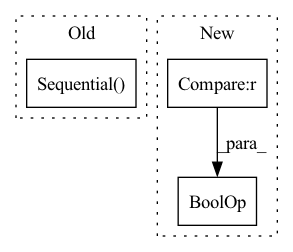

Pattern ID :1459

Before Change
planes, planes, kernel_size=3, stride=stride, padding=1, bias=True
)
self.shortcut = nn.Sequential()
if stride != 1 or in_planes != planes:
self.shortcut = nn.Sequential(
nn.Conv2d(
in_planes, planes, kernel_size=1, stride=stride, bias=True
After Change
bias=False
)
self.droprate = dropRate
self.equalInOut = (in_planes == out_planes)
self.convShortcut = (not self.equalInOut) and nn.Conv2d(
in_planes,
out_planes,
kernel_size=1,
In pattern: SUPERPATTERN
Frequency: 4
Non-data size: 3
Instances
Fragment ID: 4060844
Project Name: kaiyangzhou/dassl.pytorch
Commit Name: 0abcafff2af2b1538395ccb960ec6614ed2bd52c
Time: 2020-03-13
Author: k.zhou@surrey.ac.uk
File Name: dassl/modeling/backbone/wide_resnet.py
M Class Name: BasicBlock
N Class Name: wide_basic
M Method Name: __init__(5)
N Method Name: __init__(5)
M Parent Class: nn.Module
N Parent Class: nn.Module
M File Name: dassl/modeling/backbone/wide_resnet.py
N File Name: dassl/modeling/backbone/wide_resnet.py
M Start Line: 38
M End Line: 58
N Start Line: 14
N End Line: 45
Fragment ID: 4060841
Project Name: tuttelikz/farabio
Commit Name: 1d44294f1fa3a0a8cd95bdbad9f2e4f53b43098b
Time: 2021-08-02
Author: s.askaruly@gmail.com
File Name: farabio/models/classification/conv/mobilenetv2.py
M Class Name: InvertedResidual
N Class Name: Block
M Method Name: __init__(5)
N Method Name: __init__(5)
M Parent Class: nn.Module
N Parent Class: nn.Module
M File Name: farabio/models/classification/conv/mobilenetv2.py
N File Name: farabio/models/classification/conv/mobilenetv2.py
M Start Line: 13
M End Line: 32
N Start Line: 50
N End Line: 73
Fragment ID: 4060843
Project Name: blakechi/comvex
Commit Name: 56808952c25e98d69c362278e6e227b1318134d0
Time: 2021-04-09
Author: pwchi@ucdavis.edu
File Name: models/utils/resnet.py
M Class Name: ResNetBlockBase
N Class Name: ResNetBlockBase
M Method Name: __init__(3)
N Method Name: __init__(0)
M Parent Class: nn.Module
N Parent Class: nn.Module
M File Name: models/utils/resnet.py
N File Name: models/utils/resnet.py
M Start Line: 21
M End Line: 30
N Start Line: 11
N End Line: 38
Fragment ID: 4060842
Project Name: the-ai-summer/self-attention-cv
Commit Name: 05b3d7953775f0fa29c5289eda7d888e4f5d4fe1
Time: 2021-07-22
Author: black.adaloglou@gmail.com
File Name: self_attention_cv/UnetTr/modules.py
M Class Name: Conv3DBlock
N Class Name: Conv3DBlock
M Method Name: __init__(7)
N Method Name: __init__(5)
M Parent Class: nn.Module
N Parent Class: nn.Module
M File Name: self_attention_cv/UnetTr/modules.py
N File Name: self_attention_cv/UnetTr/modules.py
M Start Line: 9
M End Line: 24
N Start Line: 6
N End Line: 33